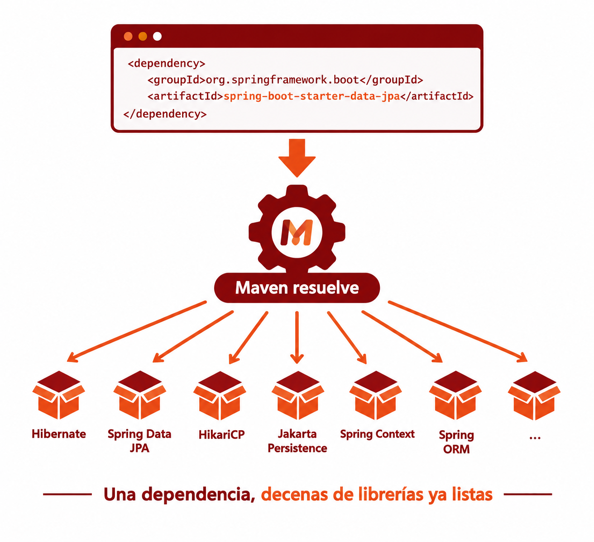
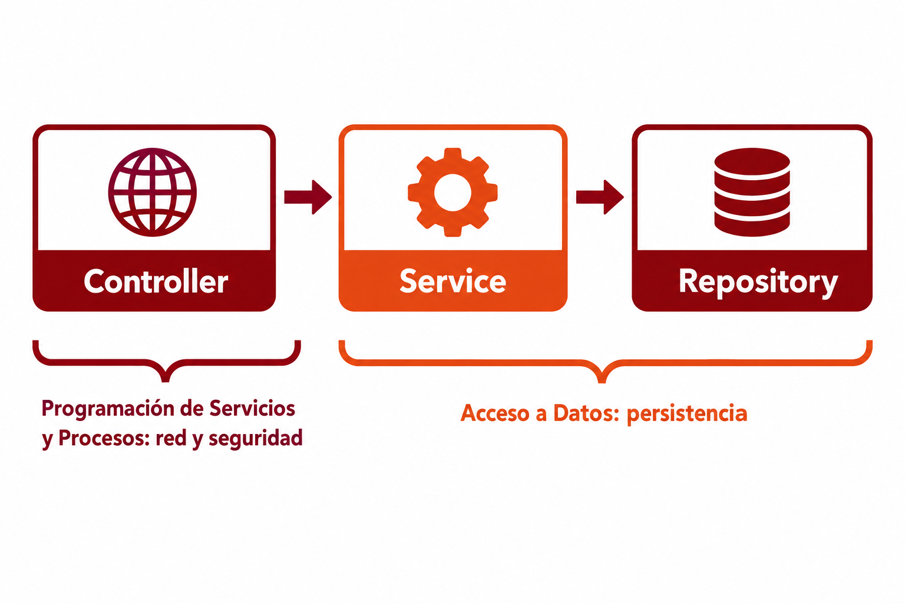

🧩 1. Fundamentos de Spring Boot¶
Descarga de diapositivas
Hasta ahora todo lo que has programado en Java ha sido consola: el programa arranca, hace algo, y termina. A partir de aquí vas a construir un tipo de programa distinto — uno que arranca y se queda esperando, sin que tú le digas nada más, hasta que otro programa le hace una pregunta. Este apartado es la base sin la que no vas a entender nada de lo que viene, ni en este módulo ni en Programación de Servicios y Procesos (PSP).
🖥️ De la consola al servidor¶
Un programa de consola tiene un ciclo de vida corto: arranca, hace su trabajo (leer, calcular, escribir), y termina. Una aplicación de servidor (o backend) es distinta en un punto clave: arranca, se pone a escuchar en un puerto, y se queda ahí, viva, esperando. No tiene ventanas ni pide datos por teclado — su "usuario" es otro programa (un navegador, una app móvil, otro servidor) que le habla a través de la red.
Para que ese mensaje llegue al programa correcto hacen falta dos datos, no uno: la dirección IP identifica la máquina dentro de la red (qué ordenador es), y el puerto identifica, dentro de esa máquina, a qué programa concreto va dirigido el mensaje. Un mismo ordenador puede tener varios programas escuchando a la vez — tu aplicación, una base de datos, otro servidor web — y cada uno necesita su propio número de puerto para no mezclarse.
Analogía: el bloque de pisos
La dirección IP es como la dirección de un bloque de pisos: identifica el edificio dentro de la ciudad. El puerto es como el número de piso: dentro del mismo edificio, distingue a qué vivienda va dirigida una carta. Sin el número de piso, el cartero llegaría al portal correcto pero no sabría dónde dejarla. Cuando decimos que un servidor "escucha en el puerto 8080", significa que se ha quedado a la espera de mensajes dirigidos precisamente a ese número, en esa máquina.
Cliente y servidor, además, necesitan hablar el mismo idioma para entenderse: un formato de mensaje acordado de antemano, llamado protocolo. El que vas a usar durante todo el curso es HTTP — define cómo se formula una petición y cómo se responde a ella, y es el mismo protocolo que usa tu navegador cada vez que visitas una página web.
flowchart LR
A["📱 Cliente<br/>(navegador, app...)"] -- "petición HTTP" --> B["🖥️ Servidor<br/>(tu aplicación, puerto 8080)"]
B -- "respuesta HTTP" --> AEl servidor no decide cuándo actuar, el cliente sí
En un programa de consola, tú controlas el ritmo: lees una línea, procesas, escribes. Un servidor no elige cuándo trabajar — se queda a la espera, y reacciona cada vez que llega una petición. Puede pasar un minuto sin que ocurra nada, o puede llegar una petición cada milisegundo.
La aplicación que vas a ir construyendo en las actividades de este curso es exactamente eso: un programa Java que no tiene Scanner ni System.out.println esperando que pulses Intro — arranca, se pone a escuchar en un puerto, y responde peticiones HTTP hasta que alguien lo detiene.
🧱 Qué es un framework¶
Hasta ahora, en tus programas, el flujo de control lo llevas tú: tu main() llama a tus clases, tus clases llaman a librerías (una ArrayList, un Scanner...) cuando las necesitan. Tú decides qué se ejecuta y cuándo.
Un framework invierte esa relación. En vez de que tu código llame a la librería, es la librería (el framework) la que llama a tu código, en los momentos que él decide: cuando arranca la aplicación, cuando llega una petición HTTP, cuando se necesita guardar un objeto en la base de datos. A esta idea se la llama inversión de control: el control del "cuándo se ejecuta qué" pasa de tus manos a las del framework.
Analogía: el restaurante
Cuando cocinas en casa (tu programa de consola), tú decides cuándo picas la cebolla, cuándo enciendes el fuego, en qué orden. Trabajar con un framework es más parecido a ser cocinero en un restaurante: el camarero (el framework) te avisa "mesa 4, primer plato" y tú solo escribes la parte que sabes hacer — la receta. Cuándo se sirve, en qué orden llegan los pedidos y cómo se reparte el trabajo entre la cocina lo decide el camarero, no tú.
Spring es el framework de Java más usado para construir este tipo de aplicaciones. Spring Boot es una capa sobre Spring que elimina casi toda la configuración manual que antes hacía falta: trae un servidor web ya integrado (no hay que instalar ni configurar uno aparte), configura automáticamente piezas típicas a partir de lo que detecta en tu proyecto, y organiza las dependencias en paquetes llamados starters — añades uno y llegan ya preparadas todas las librerías que necesitas para esa funcionalidad, sin ir buscándolas una a una.
📦 Maven y el pom.xml¶
Un proyecto Java real no se escribe solo con las clases que tú creas: depende de librerías externas (el propio Spring, el driver de PostgreSQL, Lombok...). Maven es la herramienta que gestiona esas dependencias por ti: en vez de descargar manualmente cada .jar —un fichero que empaqueta código Java ya compilado, listo para usarse como librería— y añadirlo al proyecto, declaras qué necesitas en un fichero — el pom.xml — y Maven se encarga de descargarlo, con la versión correcta, y de resolver las dependencias que esas librerías necesitan a su vez.
Una dependencia en el pom.xml tiene esta forma:
| XML | |
|---|---|
groupId identifica quién publica la librería (aquí, el propio equipo de Spring Boot) y artifactId identifica cuál de sus paquetes quieres. Con esa entrada, Maven descarga ese starter y todo lo que necesita para funcionar.

En este curso vas a trabajar, entre otras, con estas dos dependencias clave:
| XML | |
|---|---|
El nombre del starter web ha cambiado
Si buscas tutoriales antiguos de Spring Boot verás spring-boot-starter-web. En este curso usas Spring Boot 4, que separó ese starter en dos variantes según el modelo de programación: spring-boot-starter-webmvc (el modelo clásico, el que vas a usar) y spring-boot-starter-webflux (el modelo reactivo, que no vas a usar en este curso). Es el mismo starter que vas a elegir al generar tu propio proyecto en la Actividad 1.1 — si buscas spring-boot-starter-web a secas en tu pom.xml, no lo vas a encontrar.
spring-boot-starter-webmvc trae todo lo necesario para exponer una API HTTP (servidor embebido incluido); spring-boot-starter-data-jpa trae Hibernate —la herramienta que traduce automáticamente tus clases Java anotadas a tablas y sentencias SQL, sin que tú escribas ese SQL a mano— junto con Spring Data JPA, que profundizarás más adelante en este mismo tema. Desde ya vas a ver a Hibernate trabajar: es quien crea de verdad las tablas de tu base de datos a partir de tus entidades. Con solo declarar estas dos líneas, Maven descarga decenas de librerías relacionadas — esa es la ventaja de los starters: no las buscas una a una.
🗂️ La arquitectura en capas¶
Una aplicación backend no mete todo el código en una sola clase gigante: lo reparte en capas, cada una con una responsabilidad clara. El patrón más extendido — y el que vas a usar durante todo el curso — tiene tres:
flowchart LR
C["🌐 Controller<br/>recibe la petición HTTP"] --> S["⚙️ Service<br/>lógica de negocio"]
S --> R["🗄️ Repository<br/>acceso a datos"]Imagina una aplicación que gestiona el catálogo de una librería (el ejemplo que va a usar toda la teoría del curso; tu proyecto real, GameVault, lo trabajas en las actividades):
- El controller (
LibroController) recibe la petición HTTP y la traduce a una llamada Java — no contiene lógica de negocio, solo enruta. - El service (
LibroService) contiene la lógica: qué hay que comprobar, qué hay que calcular, en qué orden se hacen las cosas. - El repository (
LibroRepository) es quien habla con la base de datos.
¿Por qué separar así? Porque cada capa se puede entender, probar y cambiar sin tocar las demás: si mañana cambias de base de datos, solo tocas el repository; si cambia una regla de negocio, solo el service. La regla es que cada capa habla solo con la siguiente, sin saltarse ninguna: el controller nunca accede directamente a la base de datos.
Cada capa depende de la siguiente — el controller necesita un service, el service necesita un repository — pero ninguna crea directamente lo que necesita. Eso es justo lo que resuelve la inyección de dependencias, que ves a continuación.
💉 Inyección de dependencias¶
Mira otra vez el diagrama de capas: el controller necesita un service, y el service necesita un repository. En algún punto del código, alguien tiene que crear esos objetos y encajarlos unos dentro de otros. La pregunta de esta sección es quién hace ese trabajo — ¿tu código, o el framework?
Imagina una clase que necesita usar otra para hacer su trabajo — por ejemplo, un servicio que necesita un repositorio para consultar datos. La forma más directa, la que ya conoces, es crearla tú mismo dentro de la clase que la usa:
El código funciona, pero LibroService está creando por sí mismo el objeto que necesita:
| Java | |
|---|---|
Esto hace que el service quede unido a esa implementación concreta. Siempre que se construya un LibroService, este creará directamente su propio LibroRepository.
El problema aparece cuando quieres utilizar otro repositorio. Por ejemplo, durante un test podría interesarte sustituir el repositorio real por uno preparado para devolver datos conocidos, sin conectarte a una base de datos. Como el new LibroRepository() está escrito dentro del service, no puedes cambiarlo desde fuera sin modificar la propia clase.
Con inyección de dependencias —o dependency injection, DI— el service deja de construir el objeto que necesita. En su lugar, lo declara como parámetro del constructor:
| Java | |
|---|---|
Ahora el repositorio se construye fuera de LibroService y se le entrega al crear el service:
LibroService sigue pudiendo utilizar el repositorio exactamente igual, pero ya no decide cómo se crea ni qué implementación concreta recibe. Solo declara: «para funcionar necesito un LibroRepository».
Esto permite cambiar la dependencia sin modificar el código del service. En la aplicación normal podrá recibir el repositorio real y, durante un test, uno simulado:
flowchart LR
A["Aplicación real"] -->|"inyecta"| R["Repositorio real"]
T["Test"] -->|"inyecta"| M["Repositorio simulado"]
R --> S["LibroService"]
M --> SLa inyección de dependencias consiste, por tanto, en que una clase reciba desde fuera los objetos que necesita, en lugar de construirlos ella misma.
Es una aplicación concreta de la inversión de control: tu clase ya no controla la creación de todas sus piezas. Declara qué necesita y otra parte del programa se encarga de proporcionárselo.
La misma analogía del restaurante, un paso más
Cuando cocinas en el restaurante (recuerda la analogía de antes), no vas tú al almacén a buscar los ingredientes — te los traen a la mesa de trabajo, ya listos, cuando los necesitas. La inyección de dependencias es justo eso, pero con objetos: LibroService no va a buscar su LibroRepository; se lo entregan.
Aquí falta la pieza que hace que esto funcione de verdad: ¿quién construye ese LibroRepository y decide dárselo a LibroService? La respuesta es Spring. Al arrancar, Spring crea y guarda en un contenedor interno (el llamado contexto de la aplicación) una instancia de cada clase que le has dicho que gestione — esas instancias gestionadas son los beans. Cuando Spring necesita construir un LibroService, mira su constructor, ve que pide un LibroRepository, busca en ese contenedor si ya tiene uno, y si lo tiene, se lo pasa automáticamente. Tú nunca escribes new LibroService(...) en ningún sitio — Spring construye el objeto por ti y resuelve toda la cadena de dependencias, capa por capa.
flowchart LR
subgraph manual["Sin inyección de dependencias"]
A["LibroService"] -- "new LibroRepository()" --> B["LibroRepository"]
end
subgraph di["Con inyección de dependencias"]
C["🧰 Spring<br/>(contexto de la aplicación)"]
E["LibroRepository"]
D["LibroService"]
C -- "gestiona" --> E
E -- "lo inyecta en" --> D
endPara que Spring sepa qué clases debe gestionar como beans, se marcan con anotaciones. Las que vas a ver constantemente:
| Anotación | Qué declara |
|---|---|
@Service |
Un bean con lógica de negocio (la capa intermedia entre controlador y datos). |
@Repository |
Un bean que accede a datos (normalmente, una interfaz que Spring Data implementa por ti). |
@RestController |
Un bean que expone endpoints HTTP y devuelve las respuestas en el cuerpo (JSON, por ejemplo). |
@Configuration |
Una clase que define manualmente uno o varios beans, para casos que no encajan en las anteriores. |
Las cuatro tienen algo en común: todas le dicen a Spring "esto es un bean, gestióname el ciclo de vida y pásame lo que necesite por inyección".
Este mecanismo no se para en una sola capa — se repite hacia arriba. Así se ve la cadena completa en el controller de la librería, que declara private final LibroService libroService;, recibe el service por constructor exactamente igual que el service recibía el repository, y delega en él cada método:
No hace falta que entiendas todavía @GetMapping, @PathVariable ni ResponseEntity — esas anotaciones son de HTTP/REST, y las vas a ver en detalle en PSP. Aquí solo interesa la forma: controller → service → repository, cada uno con una responsabilidad y sin saltarse capas.
🚀 El punto de arranque de la aplicación¶
Toda aplicación Spring Boot tiene una clase con un main() que la arranca:
| Java | |
|---|---|
@SpringBootApplication es la anotación que activa todo lo visto hasta ahora: le dice a Spring Boot "escanea este paquete y los que cuelgan de él en busca de beans (@Service, @Repository...), y configúrate automáticamente según lo que encuentres en el classpath" —el conjunto de sitios donde Java busca el código que necesita para ejecutar el programa: tus clases compiladas y las librerías que ha traído Maven—. SpringApplication.run(...) es lo que realmente arranca el servidor embebido y deja la aplicación escuchando.
🧩 El @RequiredArgsConstructor de Lombok¶
Escribir a mano el constructor de inyección de cada clase se vuelve repetitivo enseguida. Lombok es una librería que genera código repetitivo por ti a partir de anotaciones, y @RequiredArgsConstructor genera automáticamente un constructor con un parámetro por cada campo final de la clase:
Sin Lombok tendrías que escribir ese constructor a mano cada vez que añadieras un campo final. Con la anotación, Spring sigue pudiendo inyectar las dependencias exactamente igual (por constructor), pero tú no mantienes ese código repetitivo.
⚙️ Configuración: application.yml y perfiles¶
Spring Boot centraliza la configuración (credenciales de base de datos, puertos, propiedades propias de la aplicación) en ficheros YAML en src/main/resources. Lo habitual es tener al menos dos: application.yml, con la configuración común, y application-dev.yml, con la específica del entorno de desarrollo (por ejemplo, la URL de conexión a PostgreSQL que usarás en la Actividad 1.1).
.yml o .yaml: es lo mismo, pero en este curso usamos siempre .yml
Spring Boot reconoce las dos extensiones sin ninguna distinción — es pura convención de quien escribe el fichero, no una regla técnica. En otros proyectos que veas por tu cuenta (tutoriales, código de terceros) puedes encontrarte cualquiera de las dos indistintamente. En este curso vas a usar siempre .yml, por uniformidad — cuando veas application.yml o application-dev.yml, esa es la extensión que debes usar tú también.
Ese -dev en el nombre es un perfil: un conjunto de configuración que solo se activa si le dices a Spring Boot que use ese perfil al arrancar. Así, el mismo código puede arrancar con configuración distinta según si estás desarrollando en tu máquina, ejecutando tests, o (en un proyecto real) desplegando en producción, sin tocar una sola línea de Java.
🧭 Dónde estás y hacia dónde vas¶
Estas piezas —el proyecto Maven, las capas, la inyección de dependencias, la configuración— las vas a trabajar durante todo el curso desde dos módulos a la vez: en Acceso a Datos te centrarás en la persistencia, todo lo que hay del service hacia abajo (JDBC, JPA, JSONB, MongoDB); en Programación de Servicios y Procesos te centrarás en los servicios en red y la seguridad, del controller hacia fuera (REST, JWT, hilos, sockets). En las actividades de ambos módulos irás construyendo, pieza a pieza, tu propia aplicación con esta misma estructura.

✅ Ideas clave¶
Abrir resumen
- Una aplicación de servidor arranca y se queda escuchando peticiones en un puerto; no tiene el mismo ciclo de vida que un programa de consola. La IP identifica la máquina, el puerto identifica el programa dentro de ella, y HTTP es el protocolo que cliente y servidor usan para entenderse.
- Un framework invierte el control: en vez de que tu código llame a la librería, el framework llama al tuyo (inversión de control).
- Spring es el framework; Spring Boot añade configuración automática, servidor embebido y starters que agrupan dependencias relacionadas.
- Maven gestiona las dependencias del proyecto a través del
pom.xml; en este curso usarásspring-boot-starter-webmvc(no-web, nombre antiguo) yspring-boot-starter-data-jpa. - La arquitectura en capas es controller (HTTP) → service (lógica) → repository (datos): cada capa habla solo con la siguiente.
- La inyección de dependencias hace que una clase declare lo que necesita (por constructor) en vez de crearlo ella misma; Spring guarda una instancia de cada clase gestionada (un bean) en su contexto de la aplicación, y se la entrega ya construida a quien la pida.
@Service,@Repository,@RestControllery@Configurationmarcan qué clases gestiona Spring como beans. application.yml/application-dev.ymlcentralizan la configuración; un perfil (dev) permite tener configuración distinta según el entorno sin tocar código.@RequiredArgsConstructorde Lombok genera el constructor con los camposfinal, que es lo que Spring usa para inyectar dependencias.